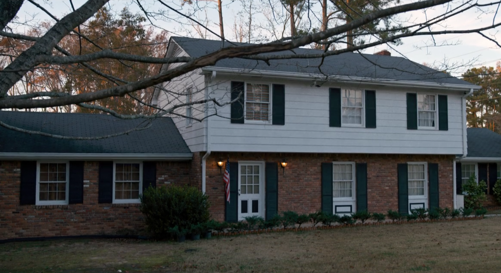
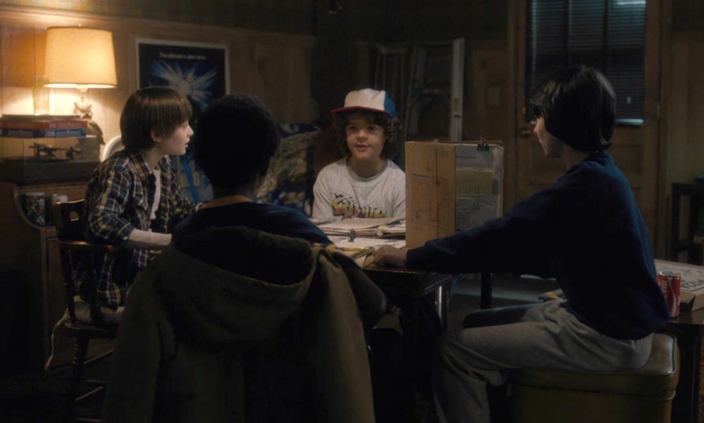

Дом в конце тупиковой улицы, в котором жили Карен и Тед Уилер с детьми: Нэнси, Майком и Холли. Сцена в подвале открывает сериал — Майк, играющий с друзьями в настольную игру Dungeons & Dragons, в качестве эпилога к целому сезону зачитывает: «Приближается нечто, и оно жаждет крови». В ту же ночь Уилл, проигравший этот раунд, попадает в лапы демогоргона.
 Дом Уилеров выступает в сериале своего рода хабом, где школьники собираются, чтобы выстроить стратегию спасения Уилла и Барб, а также прячут в подвале — подальше от любопытных взрослых — Одиннадцатую. В этом же доме, на втором этаже, Нэнси и Джонатан параллельно проводят собственное расследование и изучают повадки демогоргона. Первый этаж, напротив, образцово-показательный — отец семейства смотрит телевизор в кресле-качалке, мать целыми днями готовит и нянчится с маленькой Холли. Идиллия нарушается только в тот момент, когда в дом в поисках Одиннадцать приходят люди с корочками то ли из Министерства энергетики, то ли из ЦРУ, а Майк убегает со словами: «Скажите, что я покинул страну».